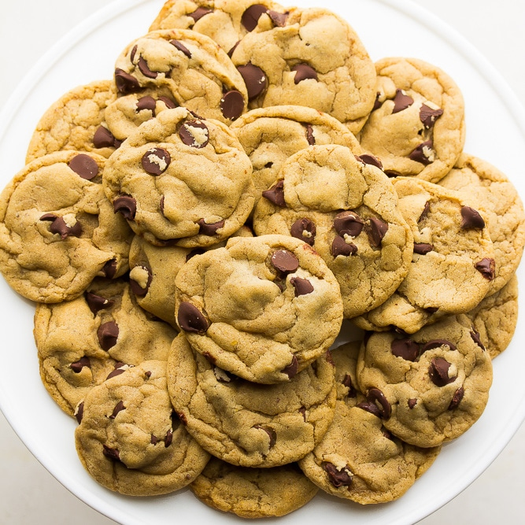

Chocolate Chip Cookies

Description
This a recipe for my favorite treat. It's easy to make and you can make
lots of it at a time. With this recipe you can make cookie dough
for [insert random number] cookies. You can freeze the dough and have
the dough ready for the next time you want some cookies.
Steps
- Preheat oven to 350 degrees F (175 degrees C).
- Cream together the butter, white sugar, and brown sugar until smooth.
- Beat in the eggs one at a time, then stir in the vanilla.
- Dissolve baking soda in hot water. Add to batter along with salt.
- Stir in flour, chocolate chips, and nuts.
- Drop by large spoonfuls onto ungreased pans.
- Bake for about 10 minutes in the preheated oven, or until edges are nicely browned.
Recipe taken from https://www.allrecipes.com/recipe/10813/best-chocolate-chip-cookies/
Home